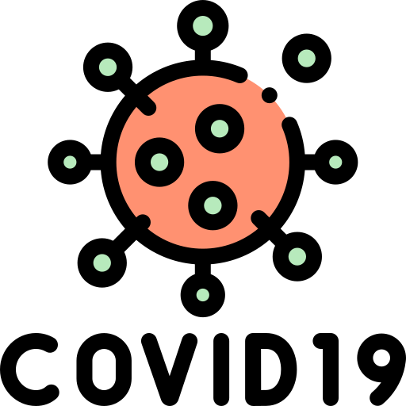

An interactive dashboard for visualising digital technology adoption trends among Vietnamese SMEs, powered by open data and intuitive geospatial analytics.
Users can schedule medical examinations and tests at the clinic or at home. The clinic can process requests, schedule appointments, and coordinate doctors to examine patients.

Visualize COVID-19 case data in Vietnam by province, status, nationality and age group.
An interactive platform that analyzes how users engage with music by genre, time of day, and device, highlighting listening patterns, content preferences, and usage trends over time.